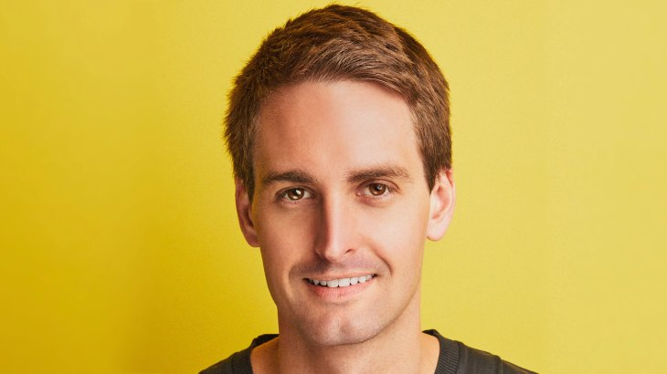

Evan Spiegel
O mais jovem bilionário do mundo.
Evan Spiegel é um dos fundadores e atual CEO da Snap Inc., empresa de tecnologia e mídia social.
Evan Spiegel fundou a Snap Inc. quando ainda estudava na Stanford University, ao lado dos colegas Bobby Murphy e Reggie Brown.
Em 2015, Spiegel foi considerado o mais jovem bilionário do mundo. Segundo a lista da Forbes 2021, seu patrimônio atual é de US$ 11,1 bilhões.
O aplicativo Snapchat, principal produto do grupo, tornou-se popular graças a adesão de celebridades com milhões de seguidores no mundo, como Kylie Jenner.

Alguns marcos da sua história:
- Evan Spiegel, CEO da Snap, tornou-se bilionário aos 25 anos.
- Spiegel lançou a empresa com Bobby Murphy, um irmão da fraternidade da Universidade de Stanford, em 2011.
- Ele se formou em Stanford com um B.S. em Design de Produto em 2018, seis anos depois ele desistiu para iniciar o Snapchat.
- Spiegel doou mais de US$ 280 milhões em ações da Snap.
Quer conhecer mais sobre Evan Spiegel Veja esse artigo